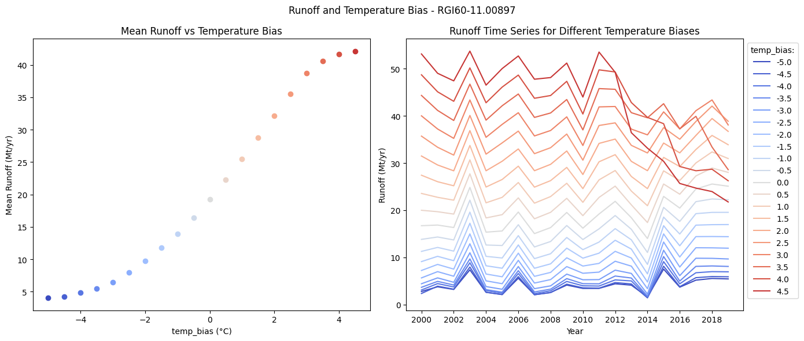
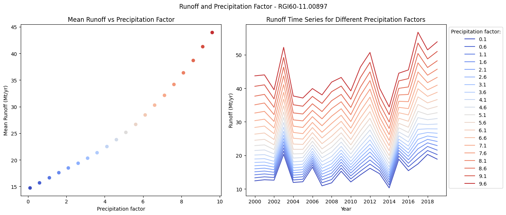
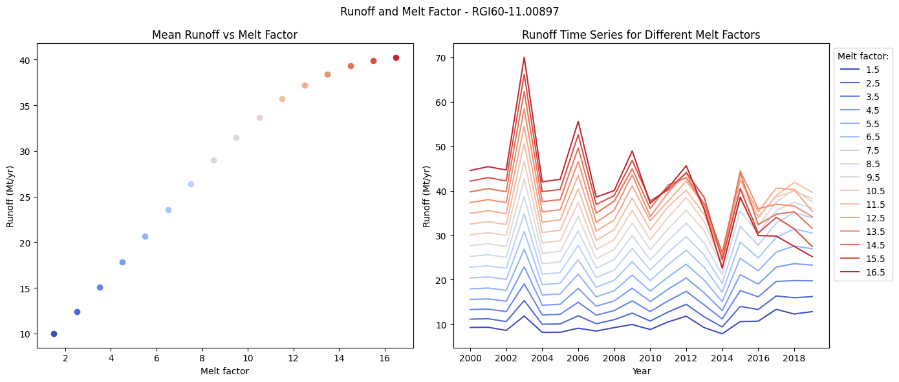
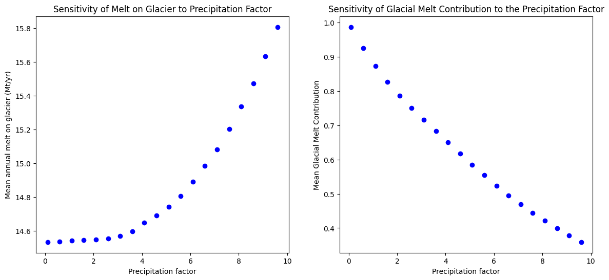
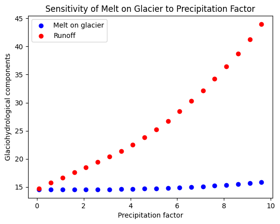

Runoff Sensitivity to Mass Balance Parameters#
Goals of this notebook: To explore the sensitivity of the runoff and OGGM’s hydrological components to the mass balance model parameters.
Mass balance parameters directly control the glacier’s mass balance (accumulation and ablation), but their impact extends beyond solid ice and snow. In OGGM, runoff is computed from multiple components: glacier melt, precipitation both on and off the glacier, and snow melt. Because runoff is a sum of these components (and some components are more sensitive to mass balance parameter changes than others), runoff can exhibit even greater sensitivity to parameter variations than the mass balance itself.
Recent work (Wimberly et al., 2025) has shown that these sensitivities have important implications for glacier hydrology and projections. Understanding how mass balance parameters propagate through the hydrological cycle is critical for water resource assessments and future projections.
This will allow us to understand the relationship between our parameters and model output, and to appreciate why careful parameter calibration is important for accurate hydrological predictions.
It is recommended to consult the previous tutorials to gain an understanding first as to how runoff is computed in OGGM:
Set Up#
First import the required packages to run this tutorial and initialize our glacier directories!
import matplotlib.pyplot as plt
import pandas as pd
import numpy as np
import xarray as xr
import matplotlib
from oggm import cfg, utils, workflow, tasks, DEFAULT_BASE_URL
from oggm.core import massbalance
from oggm.core.massbalance import MultipleFlowlineMassBalance
cfg.initialize(logging_level='WARNING')
cfg.PATHS['working_dir'] = utils.gettempdir(dirname='OGGM-runoff', reset=True)
cfg.PARAMS['store_model_geometry'] = True
2026-04-11 17:39:26: oggm.cfg: Reading default parameters from the OGGM `params.cfg` configuration file.
2026-04-11 17:39:26: oggm.cfg: Multiprocessing switched OFF according to the parameter file.
2026-04-11 17:39:26: oggm.cfg: Multiprocessing: using all available processors (N=4)
2026-04-11 17:39:26: oggm.cfg: PARAMS['store_model_geometry'] changed from `False` to `True`.
We start from a well known glacier in the Austrian Alps, Hintereisferner. But you can choose any other glacier, e.g. from this list.
# Hintereisferner
rgi_id = 'RGI60-11.00897'
# We pick the elevation-bands glaciers because they run a bit faster -
# but they create more step changes in the area outputs
gdir_hef = workflow.init_glacier_directories([rgi_id], from_prepro_level=5, prepro_border=160,
prepro_base_url=DEFAULT_BASE_URL)[0]
2026-04-11 17:39:27: oggm.workflow: init_glacier_directories from prepro level 5 on 1 glaciers.
2026-04-11 17:39:27: oggm.workflow: Execute entity tasks [gdir_from_prepro] on 1 glaciers
An Introduction to Sensitivity Analysis#
Sensitivity Analysis investigates how the variation in the output of a numerical model can be attributed to variations of its input factors (Pianosi et al., (2016)).
In this tutorial, we perform a simple, exploratory one-at-a-time sensitivity analysis to investigate the effects of the mass balance parameters on the glaciohydrological model outputs. We will focus on the mass balance parameters: the melt factor, temperature bias and precipitation factor.
Important: unlike an “operational” OGGM run, the parameters below are varied without ensuring that observations are matched. This would lead to different results / conclusions and could be the topic of another tutorial.
Simple Sensitivity Analysis Experiment#
Temperature Bias#
We will begin by investigating the sensitvity of the runoff to one parameter at a time, we will start with temperature bias. Below, we will vary only the temperature bias, and fix the melt factor and the precipitation factor.
temp_bias_df = pd.DataFrame()
file_id = '_sens'
for temp_bias in np.arange(-5, 5.0, 0.5): # We are varying the temperature bias
# For each temperature bias, we create a mass balance model with the same melt factor
# and precipitation factor, but with the new temperature bias
mb_model = MultipleFlowlineMassBalance(
gdir_hef,
mb_model_class=massbalance.MonthlyTIModel,
temp_bias=float(temp_bias), # Vary the temperature bias
melt_f=5.0, # Fix melt factor to 5.0 for all runs
prcp_fac=2.5, # Fix precipitation factor to 2.5 for all runs
check_calib_params=False, # We are forcing parameters which do not match observations
)
# We are using the task run_with_hydro to store hydrological outputs along with
# the usual glaciological outputs
tasks.run_with_hydro(
gdir_hef, # Run on the selected glacier
run_task=tasks.run_from_climate_data, # Run from climate data
mb_model=mb_model, # Use the mass balance model with the new temp_bias
ys=2000, # Period which we will average and constantly repeat
init_model_yr=2000, # Start from spinup year 2000
init_model_filesuffix='_spinup_historical', # Use the previous run as initial state
store_monthly_hydro=True, # Monthly outputs provide additional information
output_filesuffix=file_id, # Identifier for the output file, to read it later
)
# Now read the hydrological outputs for this run
with xr.open_dataset(gdir_hef.get_filepath('model_diagnostics', filesuffix=file_id)) as ds_sens:
# The last step of hydrological output is NaN (we can't compute it for this year)
ds_sens = ds_sens.isel(time=slice(0, -1)).load()
sel_vars = [v for v in ds_sens.variables if 'month_2d' not in ds_sens[v].dims]
df_annual_sens = ds_sens[sel_vars].to_dataframe()
# Store the runoff time series in a DataFrame, one column per temperature bias
temp_bias_df[temp_bias] = (
df_annual_sens['melt_off_glacier']
+ df_annual_sens['melt_on_glacier']
+ df_annual_sens['liq_prcp_off_glacier']
+ df_annual_sens['liq_prcp_on_glacier']
) * 1e-9 # Convert from kilograms to megatonnes per year (Mt/yr) for easier plotting
temp_bias_df = temp_bias_df.sort_index(axis=1)
Now, for each temperature bias value, let’s plot the mean runoff against the temperature bias, and plot the runoff time series to undestand how this varies across our range of temperature bias values.
# Now let's get a nice colormap centered at temp_bias=0
norm = matplotlib.colors.Normalize(vmin=-5, vmax=5.01)
colors_temp_bias = plt.get_cmap('coolwarm')
fig, axs = plt.subplots(1, 2, figsize=(14, 6))
for temp_bias in temp_bias_df.columns:
axs[0].plot(
temp_bias,
temp_bias_df[temp_bias].mean(),
'o',
color=colors_temp_bias(norm(temp_bias)),
)
axs[0].set_ylabel('Mean Runoff (Mt/yr)')
axs[0].set_xlabel('temp_bias (°C)')
axs[0].set_title('Mean Runoff vs Temperature Bias')
for temp_bias in temp_bias_df.columns:
axs[1].plot(
temp_bias_df.index,
temp_bias_df[temp_bias].values,
'-',
color=colors_temp_bias(norm(temp_bias)),
label=temp_bias,
)
axs[1].set_ylabel('Runoff (Mt/yr)')
axs[1].set_xlabel('Year')
axs[1].legend(title='temp_bias:', bbox_to_anchor=(1, 1))
axs[1].set_xticks(temp_bias_df.index[::2])
axs[1].set_title('Runoff Time Series for Different Temperature Biases')
fig.suptitle(f'Runoff and Temperature Bias - {gdir_hef.rgi_id}')
plt.tight_layout()

We can see that the runoff appears to be sensitive to the temperature bias! In the graph on the left, we can see the mean runoff increases as we increase the temperature bias (likely because of an increase of glacier melt), and on the graph on the right, we can see how this affects the runoff annually. The high temperature bias leads to a strong reduction of runoff towards the end of the period, likely because the glacier is melting very fast and cannot sustain high runoff for long.
Precipitation Factor#
Now lets explore what happens when we vary the precipitation factor, and fix our other two mass balance parameters.
prcp_fac_df = pd.DataFrame()
for prcp_fac in np.arange(0.1, 10, 0.5): # Now we are varying the precipitation factor
# For each precipitation factor, we create a mass balance model with the same melt
# factor and temperature bias, but with the new precipitation factor
mb_model = MultipleFlowlineMassBalance(
gdir_hef,
mb_model_class=massbalance.MonthlyTIModel,
prcp_fac=float(prcp_fac),
melt_f=5.0, # Fix melt factor
temp_bias=0, # Fix the temperature bias to 0
check_calib_params=False, # We are forcing parameters which do not match observations
)
# We are using the task run_with_hydro to store hydrological outputs along with
# the usual glaciological outputs
tasks.run_with_hydro(
gdir_hef, # Run on the selected glacier
run_task=tasks.run_from_climate_data,
mb_model=mb_model, # Use the mass balance model with the new prcp_fac
ys=2000, # Period which we will average and constantly repeat
init_model_yr=2000, # Start from spinup year 2000
init_model_filesuffix='_spinup_historical', # Use the previous run as initial state
store_monthly_hydro=True, # Monthly outputs provide additional information
output_filesuffix=file_id, # Identifier for the output file, to read it later
)
# Reading the glaciological and hydrological outputs for this run again
with xr.open_dataset(gdir_hef.get_filepath('model_diagnostics', filesuffix=file_id)) as ds_sens:
# The last step of hydrological output is NaN (we can't compute it for this year)
ds_sens = ds_sens.isel(time=slice(0, -1)).load()
sel_vars = [v for v in ds_sens.variables if 'month_2d' not in ds_sens[v].dims]
df_annual_sens = ds_sens[sel_vars].to_dataframe()
# Store the runoff time series in a DataFrame, one column per precipitation factor
prcp_fac_df[prcp_fac] = (
df_annual_sens['melt_off_glacier']
+ df_annual_sens['melt_on_glacier']
+ df_annual_sens['liq_prcp_off_glacier']
+ df_annual_sens['liq_prcp_on_glacier']
) * 1e-9
prcp_fac_df = prcp_fac_df.sort_index(axis=1)
Now let’s plot to see our results.
# Now we can centre the colormap around prcp_fac
norm = matplotlib.colors.Normalize(vmin=0.1, vmax=10)
colors_prcp_fac = plt.get_cmap('coolwarm')
fig, axs = plt.subplots(1, 2, figsize=(14, 6))
for prcp_fac in prcp_fac_df.columns:
axs[0].plot(
prcp_fac,
prcp_fac_df[prcp_fac].mean(),
'o',
color=colors_prcp_fac(norm(prcp_fac)),
)
axs[0].set_ylabel('Mean Runoff (Mt/yr)')
axs[0].set_xlabel('Precipitation factor')
axs[0].set_title('Mean Runoff vs Precipitation Factor')
for prcp_fac in prcp_fac_df.columns:
axs[1].plot(
prcp_fac_df.index,
prcp_fac_df[prcp_fac].values,
'-',
color=colors_prcp_fac(norm(prcp_fac)),
label=prcp_fac,
)
axs[1].set_ylabel('Runoff (Mt/yr)')
axs[1].set_xlabel('Year')
axs[1].legend(title='Precipitation factor:', bbox_to_anchor=(1, 1))
axs[1].set_xticks(prcp_fac_df.index[::2])
axs[1].set_title('Runoff Time Series for Different Precipitation Factors')
fig.suptitle(f'Runoff and Precipitation Factor - {gdir_hef.rgi_id}')
plt.tight_layout()

We can see that again, the runoff appears sensitive to the precipitation factor! And that as the precipitation factor increases, as does the runoff. Note that the increase is not linear.
Melt Factor#
Finally, let’s see what happens when we alter the melt factor and fix the remaining 2 mass balance parameters!
melt_f_df = pd.DataFrame()
for melt_f in np.arange(1.5, 17, 1.0): # Now we are varying the melt factor
# For each melt factor, we create a mass balance model with the same precipitation
# factor and temperature bias, but now with the new melt factor
mb_model = MultipleFlowlineMassBalance(
gdir_hef,
mb_model_class=massbalance.MonthlyTIModel,
melt_f=float(melt_f),
prcp_fac=2.5,
temp_bias=0,
check_calib_params=False, # We are forcing parameters which do not match observations
)
# Run this with our 2 fixed mass balance parameters and our varying melt factor
tasks.run_with_hydro(
gdir_hef, # Run on the selected glacier
run_task=tasks.run_from_climate_data, # Running from observed climate data
ys=2000, # Period which we will average and constantly repeat
init_model_yr=2000, # Start from spinup year 2000
init_model_filesuffix='_spinup_historical', # Use the previous run as initial state
mb_model=mb_model, # Use the mass balance model with the new melt_f
store_monthly_hydro=True, # Monthly outputs provide additional information
output_filesuffix=file_id, # Identifier for the output file, to read it later
)
# Reading the glaciological and hydrological outputs
with xr.open_dataset(gdir_hef.get_filepath('model_diagnostics', filesuffix=file_id)) as ds_sens:
# The last step of hydrological output is NaN (we can't compute it for this year)
ds_sens = ds_sens.isel(time=slice(0, -1)).load()
sel_vars = [v for v in ds_sens.variables if 'month_2d' not in ds_sens[v].dims]
df_annual_sens = ds_sens[sel_vars].to_dataframe()
# Store the runoff time series in a DataFrame, one column per melt factor
melt_f_df[melt_f] = (
df_annual_sens['melt_off_glacier']
+ df_annual_sens['melt_on_glacier']
+ df_annual_sens['liq_prcp_off_glacier']
+ df_annual_sens['liq_prcp_on_glacier']
) * 1e-9
melt_f_df = melt_f_df.sort_index(axis=1)
Now we plot:
# let's get a nice colormap centered around melt_f
norm = matplotlib.colors.Normalize(vmin=1.5, vmax=17)
colors_melt_f = plt.get_cmap('coolwarm')
fig, axs = plt.subplots(1, 2, figsize=(14, 6))
for melt_f in melt_f_df.columns:
axs[0].plot(
melt_f,
melt_f_df[melt_f].mean(),
'o',
color=colors_melt_f(norm(melt_f)),
)
axs[0].set_ylabel('Runoff (Mt/yr)')
axs[0].set_xlabel('Melt factor')
axs[0].set_title('Mean Runoff vs Melt Factor')
for melt_f in melt_f_df.columns:
axs[1].plot(
melt_f_df.index,
melt_f_df[melt_f].values,
'-',
color=colors_melt_f(norm(melt_f)),
label=melt_f,
)
axs[1].set_ylabel('Runoff (Mt/yr)')
axs[1].set_xlabel('Year')
axs[1].legend(title='Melt factor:', bbox_to_anchor=(1, 1))
axs[1].set_xticks(melt_f_df.index[::2])
axs[1].set_title('Runoff Time Series for Different Melt Factors')
fig.suptitle(f'Runoff and Melt Factor - {gdir_hef.rgi_id}')
plt.tight_layout()

Again, we can see that the runoff is sensitive to the melt factor too! And that, as the melt factor increases, so does the runoff. Like with the temperature bias, high melt factors lead to a quick depletion of the glacier.
We have explored the relationship between the mass balance parameters and the runoff, but what about other glaciohydrological outputs?
Exploring other Glaciohydrological outputs in OGGM#
First let’s start with a definition! In this next section we will be investigating the melt contribution to runoff, defined as:
\( \frac{\text{melt on glacier}}{\text{runoff}}\).
This represents how much of the total runoff can be attributed to the glacial melt (i.e. the melt water produced from the currently glaciated area).
Below we will investigate both the melt contribution, and melt_on_glacier sensitivity to the precipitation factor.
We run a final set of simulations to obtain the glaciohydrological outputs from OGGM for our sensitivity study.
# Varying prcp_fac between a range of values with a step of 0.5
pd_prcp_sens = pd.DataFrame(index=np.arange(0.1, 10.0, 0.5))
file_id = '_sens'
for pf in pd_prcp_sens.index:
mb_model = MultipleFlowlineMassBalance(
gdir_hef,
mb_model_class=massbalance.MonthlyTIModel,
prcp_fac=float(pf),
melt_f=5.0,
temp_bias=0,
check_calib_params=False,
)
# We are using the task run_with_hydro to store hydrological outputs along with the usual glaciological outputs
# Run this again with the calibrated parameters
tasks.run_with_hydro(gdir_hef, # Run on the selected glacier
run_task=tasks.run_from_climate_data, # running from observed climate data
ys=2000, # Period which we will average and constantly repeat
init_model_yr=2000, # Start from spinup year 2000
init_model_filesuffix='_spinup_historical', # use the previous run as initial state
mb_model=mb_model, # use the mass balance model with the new melt_f
store_monthly_hydro=True, # Monthly outputs provide additional information
output_filesuffix=file_id); # an identifier for the output file, to read it later
with xr.open_dataset(gdir_hef.get_filepath('model_diagnostics', filesuffix=file_id)) as ds_sens:
# The last step of hydrological output is NaN (we can't compute it for this year)
ds_sens = ds_sens.isel(time=slice(0, -1)).load()
# Plot the runoff again for the calibrated melt_f parameter
sel_vars = [v for v in ds_sens.variables if 'month_2d' not in ds_sens[v].dims]
df_annual_sens = ds_sens[sel_vars].to_dataframe()
pd_prcp_sens.loc[pf, 'melt_off_glacier'] = df_annual_sens['melt_off_glacier'].mean() * 1e-9
pd_prcp_sens.loc[pf, 'melt_on_glacier'] = df_annual_sens['melt_on_glacier'].mean() * 1e-9
pd_prcp_sens.loc[pf, 'liq_prcp_off_glacier'] = df_annual_sens['liq_prcp_off_glacier'].mean() * 1e-9
pd_prcp_sens.loc[pf, 'liq_prcp_on_glacier'] = df_annual_sens['liq_prcp_on_glacier'].mean() * 1e-9
pd_prcp_sens.loc[pf, 'runoff'] = pd_prcp_sens.loc[pf, 'melt_off_glacier'] + pd_prcp_sens.loc[pf, 'melt_on_glacier'] + pd_prcp_sens.loc[pf, 'liq_prcp_off_glacier'] + pd_prcp_sens.loc[pf, 'liq_prcp_on_glacier']
Now plotting to investigate the sensitivity of the melt_on_glacier and the melt contribution to the precipitation factor.
fig, axs = plt.subplots(1,2,figsize=(14,6))
for pf in pd_prcp_sens.index:
axs[0].scatter(
pf,
pd_prcp_sens.loc[pf, 'melt_on_glacier'], # melt on glacier
color='blue'
)
axs[1].scatter(
pf,
pd_prcp_sens.loc[pf, 'melt_on_glacier']/pd_prcp_sens.loc[pf, 'runoff'], # melt contribution
color='blue'
)
axs[0].set_xlabel('Precipitation factor')
axs[0].set_ylabel('Mean annual melt on glacier (Mt/yr)')
axs[0].set_title('Sensitivity of Melt on Glacier to Precipitation Factor')
axs[1].set_xlabel('Precipitation factor')
axs[1].set_ylabel('Mean Glacial Melt Contribution')
axs[1].set_title('Sensitivity of Glacial Melt Contribution to the Precipitation Factor')
plt.show()

The above graph shows that these glaciohydrological outputs are both sensitive to the precipitation factor changing!
We can see that as the precipitation factor increases, the mean annual melt on glacier increases.
However, when we divide this value by the total runoff to derive the melt contribution, this results in a decrease in the melt contribution as the precipitation factor increases.
Let’s think about why there might be an increase in the melt on glacier with an increasing precipitation factor, but a decreasing glacial melt contribution? We can start by investigating how much the total runoff increases, compared to the melt on glacier, and this might help us answer the question!
fig, axs = plt.subplots()
for i, pf in enumerate(pd_prcp_sens.index):
axs.scatter(
pf,
pd_prcp_sens.loc[pf, 'melt_on_glacier'],
color='blue',
label='Melt on glacier' if i == 0 else None
)
axs.scatter(
pf,
pd_prcp_sens.loc[pf, 'runoff'],
color='red',
label='Runoff' if i == 0 else None
)
axs.set_xlabel('Precipitation factor')
axs.set_ylabel('Glaciohydrological components')
axs.set_title('Sensitivity of Melt on Glacier to Precipitation Factor')
plt.legend()
plt.show()

We can see that the total runoff is more sensitive to the changes in the precipitation factor and is increasing at a much more rapid rate when we increase the precipitation factor. Therefore this causes a decrease in the melt contribution makes sense.
This shows us that different outputs can have different sensitivities to the same changing input parameters, and can lead to some interesting results!
Tutorial take-aways#
Sensitivity analysis is a useful tool to understand the relationship between our model inputs and outputs
One-at-a-time sensitivity analysis is an exploratory tool to help us better investigate model behaviour.
Different outputs can exhibit different sensitivities for the same range of input values.
The model sensitivity depends greatly on the chosen inputs (what they are, and their ranges) and the outputs we are considering.
This is a very simple application of sensitivity analysis applied to OGGM, but these insights can motivate further use of sensitivity analysis on a larger-scale. There are future plans to integrate the Sensitivity Analysis For Everyone Toolbox (SAFE) with OGGM for more complex sensitivity analysis applications!
References#
Pianosi, F., Beven, K., Freer, J., Hall, J. W., Rougier, J., Stephenson, D. B., and Wagener, T.: Sensitivity analysis of environmental models: a systematic review with practical workflow, Environ. Model. Softw., 79, 214–232, https://doi.org/10.1016/j.envsoft.2016.02.008, 2016
Wimberly, F., Ultee, L., Schuster, L., Huss, M., Rounce, D. R., Maussion, F., Coats, S., Mackay, J., and Holmgren, E.: Inter-model differences in 21st century glacier runoff for the world’s major river basins, The Cryosphere, 19, 1491–1511, https://doi.org/10.5194/tc-19-1491-2025, 2025.